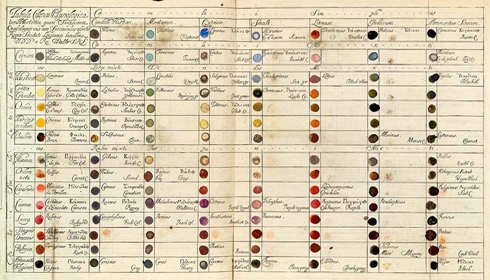

The first color wheel has been attributed to Sir Isaac Newton, who in 1706 arranged red, orange, yellow, green, blue, indigo, and violet into a natural progression on a rotating disk. As the disk spins, the colors blur together so rapidly that the human eye sees white. From there the organization of color has taken many forms, from tables and charts, to triangles and and wheels the history.
